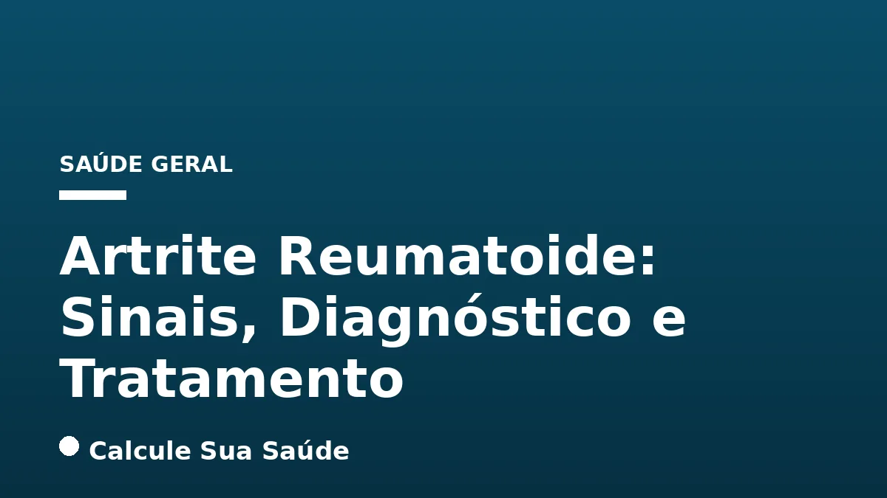

Aviso médico importante
Este conteúdo é educativo e informativo e não substitui a consulta, o diagnóstico ou o tratamento de um profissional de saúde. Em caso de sintomas, procure orientação médica.
Índice do Artigo
- 1. O Que É Artrite Reumatoide? Uma Visão Geral Científica
- 2. Epidemiologia da Artrite Reumatoide: Impacto no Brasil e no Mundo
- 3. Desvendando as Causas e Fatores de Risco da Artrite Reumatoide
- 4. Sinais e Sintomas da Artrite Reumatoide: Reconhecendo os Primeiros Indícios
- 5. O Complexo Processo Diagnóstico da Artrite Reumatoide
- 6. A Urgência do Diagnóstico Precoce e o Papel do Reumatologista
- 7. Estratégias de Prevenção e Manejo de Fatores de Risco Modificáveis
- 8. Princípios do Tratamento da Artrite Reumatoide: Uma Abordagem Multidisciplinar
- 9. Tratamentos Medicamentosos: A Vanguarda da Terapia para AR
- 10. Terapias Não Farmacológicas e o Apoio Integral ao Paciente
- 11. Desmistificando a Artrite Reumatoide: Mitos e Verdades Baseados em Evidências
- 12. Perguntas frequentes
A Artrite Reumatoide (AR) é uma condição inflamatória crônica, autoimune e multissistêmica que afeta milhões de pessoas em todo o mundo. Caracterizada principalmente pela inflamação das articulações, esta doença pode levar a dor intensa, inchaço, rigidez e, se não tratada adequadamente, a danos articulares irreversíveis, deformidades e uma significativa redução na qualidade de vida. Compreender seus sinais, o processo diagnóstico e as opções de tratamento é fundamental para um manejo eficaz e para mitigar seu impacto.
Diferentemente da osteoartrite, que é uma condição degenerativa resultante do desgaste articular, a Artrite Reumatoide é uma doença autoimune, onde o próprio sistema imunológico do corpo ataca erroneamente seus tecidos saudáveis, em particular a membrana sinovial que reveste as articulações. Essa distinção é crucial para o entendimento da patologia e para a escolha das abordagens terapêuticas mais adequadas. A doença acomete mais mulheres do que homens, geralmente com início entre os 30 e 40 anos, e sua incidência tende a aumentar com a idade.
Neste artigo aprofundado, exploraremos os aspectos mais relevantes da Artrite Reumatoide, desde suas causas e fatores de risco até as mais recentes estratégias de diagnóstico e tratamento baseadas em evidências científicas. Nosso objetivo é fornecer informações claras e precisas para pacientes, cuidadores e profissionais de saúde, reforçando a importância de uma abordagem multidisciplinar para o controle da doença e a melhoria do bem-estar.
Em resumo
- A Artrite Reumatoide (AR) é uma doença autoimune inflamatória crônica que afeta principalmente as articulações, mas pode comprometer múltiplos órgãos.
- Os sintomas incluem dor, inchaço, calor e rigidez matinal prolongada nas articulações, frequentemente de forma simétrica e inicialmente nas pequenas articulações das mãos e pés.
- O diagnóstico é realizado por um reumatologista, combinando avaliação clínica, exames laboratoriais (Fator Reumatoide, anti-CCP, VHS, PCR) e exames de imagem, seguindo critérios de classificação como os ACR/EULAR 2010.
- Não há cura para a AR, mas o tratamento precoce e contínuo com medicamentos modificadores da doença (DMARDs sintéticos, biológicos e inibidores de JAK) é crucial para controlar a inflamação, prevenir danos articulares e alcançar a remissão.
- A abordagem terapêutica é multidisciplinar, envolvendo medicamentos, fisioterapia, terapia ocupacional, atividade física adaptada e apoio psicossocial, visando melhorar a função e a qualidade de vida do paciente.
- Mitos comuns sobre a AR, como ser exclusiva de idosos ou mulheres, ou que o frio a causa, são desmentidos pela ciência, que enfatiza a importância da atividade física e de uma alimentação saudável.
1. O Que É Artrite Reumatoide? Uma Visão Geral Científica
A Artrite Reumatoide (AR) é definida como uma doença inflamatória crônica, autoimune e multissistêmica de etiologia desconhecida, que se manifesta primariamente nas articulações. O cerne da patologia reside na inflamação persistente da membrana sinovial, o tecido que reveste as articulações. Essa inflamação crônica, se não controlada, leva à proliferação do tecido sinovial (pannus), que invade e destrói a cartilagem e o osso adjacente, resultando em erosões ósseas, deformidades articulares e perda funcional.
A natureza autoimune da AR significa que o sistema imunológico, que normalmente protege o corpo contra invasores externos, erroneamente ataca os próprios tecidos do organismo. No caso da AR, o alvo principal são as articulações, mas a doença pode afetar outros órgãos e sistemas, caracterizando-a como uma condição multissistêmica. A prevalência global da AR varia entre 0,5% e 1% da população adulta, e no Brasil, estima-se que afete entre 0,3% e 1% da população, o que corresponde a aproximadamente 2 milhões de pessoas.
É importante diferenciar a Artrite Reumatoide de outras formas de artrite, como a osteoartrite (artrose). Enquanto a osteoartrite é uma doença degenerativa resultante do desgaste da cartilagem articular, a AR é uma doença inflamatória autoimune. Essa distinção é fundamental para o diagnóstico correto e para a escolha do tratamento mais adequado, pois as abordagens terapêuticas são distintas para cada condição.
| Característica | Artrite Reumatoide (AR) | Osteoartrite (Artrose) |
|---|---|---|
| Natureza | Doença autoimune, inflamatória crônica | Doença degenerativa, de desgaste articular |
| Causa | Desconhecida (fatores genéticos e ambientais) | Desgaste da cartilagem, idade, trauma, obesidade |
| Articulações Afetadas | Pequenas articulações (mãos, pés) simetricamente; pode progredir para grandes | Grandes articulações de carga (joelhos, quadris, coluna); mãos |
| Sintomas | Dor, inchaço, calor, rigidez matinal prolongada (>1h), fadiga | Dor que piora com o movimento e melhora com repouso, rigidez matinal curta (<30 min) |
| Dano Articular | Destruição da cartilagem e osso, deformidades | Perda de cartilagem, formação de osteófitos (bicos de papagaio) |
| Idade de Início | Geralmente entre 30 e 40 anos, mas pode ocorrer em qualquer idade | Mais comum em idosos |
2. Epidemiologia da Artrite Reumatoide: Impacto no Brasil e no Mundo
A Artrite Reumatoide representa um desafio significativo para a saúde pública globalmente. Conforme dados da Sociedade Brasileira de Reumatologia e estudos internacionais, a prevalência da AR na população adulta mundial varia de 0,5% a 1%. No Brasil, a estimativa é que a doença afete entre 0,3% e 1% da população, o que se traduz em aproximadamente 2 milhões de indivíduos vivendo com a condição. Essa prevalência, embora pareça pequena em termos percentuais, representa um número substancial de pessoas que necessitam de cuidados contínuos e especializados.
Um dos aspectos epidemiológicos mais marcantes da AR é a sua predileção por mulheres, que são acometidas duas a três vezes mais frequentemente do que os homens. Essa diferença de gênero sugere um papel importante dos fatores hormonais ou genéticos ligados ao sexo na patogênese da doença. Além disso, a AR geralmente se manifesta em uma fase produtiva da vida, com o início dos sintomas ocorrendo tipicamente entre os 30 e 40 anos de idade, embora possa surgir em qualquer faixa etária, incluindo a infância (conhecida como artrite idiopática juvenil).
A incidência da doença tende a aumentar com a idade, o que a torna uma preocupação crescente em populações com maior expectativa de vida. O impacto da AR vai além da dor e da incapacidade física, estendendo-se a aspectos socioeconômicos, como a perda de produtividade no trabalho, custos com tratamentos e a necessidade de adaptações no ambiente domiciliar e profissional. O conhecimento desses dados epidemiológicos é crucial para o planejamento de políticas de saúde, a alocação de recursos e o desenvolvimento de estratégias de rastreamento e manejo da doença.
3. Desvendando as Causas e Fatores de Risco da Artrite Reumatoide
Apesar de ser uma das doenças autoimunes mais estudadas, a causa exata da Artrite Reumatoide permanece desconhecida. No entanto, a ciência aponta para uma complexa interação entre fatores genéticos e ambientais que, em indivíduos predispostos, desencadeiam a resposta autoimune característica da doença. Compreender esses fatores é essencial para identificar populações de risco e, eventualmente, desenvolver estratégias de prevenção.
Fatores Genéticos: A Herança da Predisposição
A predisposição genética desempenha um papel significativo no desenvolvimento da AR. Sabe-se que a presença de certos genes, como os alelos do Complexo Principal de Histocompatibilidade (MHC) de classe II, particularmente o HLA-DRB1, aumenta o risco de desenvolver a doença. No entanto, a genética por si só não é suficiente; a maioria das pessoas com esses marcadores genéticos nunca desenvolve AR, indicando que outros fatores são necessários para o desencadeamento da doença.
Fatores Ambientais e de Estilo de Vida: Gatilhos Potenciais
Diversos fatores ambientais e de estilo de vida têm sido associados a um risco aumentado de AR em indivíduos geneticamente suscetíveis:
- Tabagismo: O fumo é um dos fatores ambientais mais consistentemente ligados ao desenvolvimento e à gravidade da AR. Ele pode influenciar o padrão da doença, induzir a citrulinação de proteínas e aumentar a produção de autoanticorpos, como o anti-CCP. A cessação do tabagismo é uma recomendação crucial para pacientes com AR e para aqueles em risco.
- Obesidade: A obesidade é reconhecida como um fator de risco para a AR, além de estar associada a uma maior atividade da doença e a uma resposta menos favorável ao tratamento. O tecido adiposo é metabolicamente ativo e produz citocinas pró-inflamatórias que podem contribuir para a inflamação sistêmica.
- Infecções Virais e Bacterianas: Acredita-se que certas infecções, tanto virais quanto bacterianas, possam atuar como gatilhos para a AR em indivíduos predispostos, através de mecanismos como o mimetismo molecular, onde antígenos microbianos se assemelham a proteínas do próprio corpo, induzindo uma resposta autoimune.
- Alterações no Microbioma: Mudanças na composição e função do microbioma (o conjunto de microrganismos que habitam o corpo, especialmente no trato digestivo, boca e pulmões) têm sido implicadas na patogênese da AR. Um desequilíbrio na flora bacteriana pode levar a uma maior permeabilidade intestinal e à ativação do sistema imunológico.
- Doença Periodontal (Periodontite): A periodontite, uma infecção crônica das gengivas, é um fator de risco bem estabelecido para a AR. A bactéria Porphyromonas gingivalis, comum na periodontite, possui uma enzima que pode citrulinar proteínas, um processo chave na autoimunidade da AR.
A complexidade da interação entre esses fatores ressalta a natureza multifatorial da Artrite Reumatoide, tornando a pesquisa contínua essencial para desvendar completamente seus mecanismos e desenvolver estratégias de prevenção mais eficazes.
4. Sinais e Sintomas da Artrite Reumatoide: Reconhecendo os Primeiros Indícios
A Artrite Reumatoide é uma doença com um espectro de manifestações clínicas que podem variar em intensidade e apresentação. Os sintomas podem surgir de forma insidiosa e progredir ao longo do tempo, com períodos de maior atividade da doença (surtos) e períodos de remissão. O reconhecimento precoce desses sinais é vital para um diagnóstico e tratamento tempestivos, que podem alterar significativamente o curso da doença.
Sintomas Articulares Típicos
Os sintomas mais característicos da AR afetam as articulações e incluem:
- Dor, Inchaço e Calor: As articulações afetadas tornam-se dolorosas ao toque, inchadas devido ao acúmulo de líquido sinovial e quentes, refletindo o processo inflamatório ativo.
- Acometimento Simétrico: Uma característica distintiva da AR é o envolvimento simétrico, ou seja, as mesmas articulações em ambos os lados do corpo são geralmente afetadas (por exemplo, ambas as mãos ou ambos os joelhos).
- Articulações Mais Frequentemente Afetadas: Inicialmente, a AR tende a acometer as pequenas articulações das mãos (especialmente as metacarpofalangeanas e interfalangeanas proximais) e dos pés. Com a progressão da doença, pode se espalhar para articulações maiores, como punhos, cotovelos, joelhos, tornozelos, ombros e quadris.
Rigidez Matinal: Um Marcador Importante
A rigidez articular matinal é um sintoma cardinal da Artrite Reumatoide. Ela é frequentemente pior pela manhã e após períodos de inatividade ou repouso prolongado. Diferente da rigidez da osteoartrite, que geralmente dura menos de 30 minutos, a rigidez matinal na AR pode persistir por 45 minutos ou mais, ou pelo menos 1 hora, e melhora gradualmente com a movimentação. Essa duração prolongada é um forte indicativo de inflamação sinovial.
Manifestações Extra-Articulares: Além das Articulações
A natureza multissistêmica da AR significa que a inflamação pode afetar outros órgãos e tecidos do corpo, resultando em manifestações extra-articulares. Estas podem incluir:
- Sintomas Sistêmicos: Fadiga persistente, febre baixa e perda de apetite são comuns e refletem a inflamação sistêmica.
- Nódulos Reumatoides: Pequenas protuberâncias firmes e indolores que se formam sob a pele, geralmente em áreas de pressão, como cotovelos ou dedos.
- Olhos: Inflamações oculares como episclerite (inflamação da camada externa da esclera) e escleromalacia perfurante (afinamento e perfuração da esclera) podem ocorrer.
- Pulmões: Derrame pleural (acúmulo de líquido ao redor dos pulmões), fibrose pulmonar e nódulos pulmonares são possíveis.
- Coração e Vasos Sanguíneos: A AR aumenta o risco de doenças cardiovasculares, como aterosclerose, pericardite e vasculite (inflamação dos vasos sanguíneos).
- Pele e Sangue: Vasculite cutânea, úlceras nas pernas e anemia são outras manifestações possíveis.
A presença de manifestações extra-articulares, especialmente vasculite, derrame pleural, episclerite e escleromalacia perfurante, está frequentemente associada a um pior prognóstico da doença, sublinhando a necessidade de monitoramento e tratamento rigorosos.
5. O Complexo Processo Diagnóstico da Artrite Reumatoide
O diagnóstico da Artrite Reumatoide é um processo complexo que exige a expertise de um reumatologista. Não existe um único exame que, isoladamente, confirme a doença. Em vez disso, o diagnóstico é estabelecido através de uma combinação cuidadosa de história clínica detalhada, exame físico minucioso, exames laboratoriais específicos e, quando necessário, exames de imagem. A integração desses elementos permite ao médico formar um quadro completo e preciso.
Avaliação Clínica e Exame Físico
O primeiro passo no diagnóstico é a coleta da história clínica do paciente, onde o médico investiga a natureza, localização, duração e padrão dos sintomas articulares e extra-articulares. Perguntas sobre a rigidez matinal, o acometimento simétrico e a presença de fadiga são cruciais. Durante o exame físico, o reumatologista inspeciona e palpa as articulações para identificar sinais de inflamação, como inchaço, calor, sensibilidade e limitação de movimento. A avaliação da função articular e a busca por deformidades também são partes integrantes.
Exames Laboratoriais: Biomarcadores e Atividade Inflamatória
Os exames de sangue desempenham um papel fundamental no diagnóstico e prognóstico da AR:
- Fator Reumatoide (FR): É um autoanticorpo presente em cerca de 70-80% dos pacientes com AR. Embora não seja exclusivo da AR (pode ser positivo em outras condições e em pessoas saudáveis), sua presença em títulos elevados é sugestiva da doença.
- Anticorpos Antipeptídeos Citrulinados Cíclicos (anti-CCP): Este é um autoanticorpo mais específico para a AR do que o FR, sendo detectado em aproximadamente 60-70% dos pacientes. O anti-CCP pode ser positivo mesmo em fases muito iniciais da doença e está associado a um pior prognóstico e maior risco de erosões articulares. Sua presença é um forte indicador de AR, especialmente quando o FR é negativo.
- Provas de Atividade Inflamatória: A Velocidade de Hemossedimentação (VHS) e a Proteína C Reativa (PCR) são marcadores inespecíficos de inflamação sistêmica. Seus níveis podem estar elevados em pacientes com AR ativa, refletindo a intensidade do processo inflamatório.
Exames de Imagem: Visualizando o Dano Articular
Os exames de imagem são essenciais para avaliar a extensão do dano articular e monitorar a progressão da doença:
- Radiografias (Raios-X): São as primeiras imagens solicitadas e podem revelar inchaço de partes moles nas fases iniciais. Com a progressão da doença, podem mostrar estreitamento do espaço articular, erosões ósseas e deformidades características.
- Ultrassonografia: Permite uma avaliação mais detalhada da sinóvia (identificando sinovite e proliferação do pannus), tendões e ligamentos, além de detectar erosões ósseas precoces que podem não ser visíveis em radiografias.
- Ressonância Magnética (RM): Oferece a visualização mais sensível da inflamação sinovial, edema ósseo (um preditor de erosão futura) e danos à cartilagem, sendo particularmente útil em casos de dúvida diagnóstica ou para avaliar a atividade da doença em locais específicos.
- Tomografia Computadorizada (TC): Embora menos utilizada para o diagnóstico inicial, pode ser útil para avaliar danos ósseos complexos, especialmente na coluna cervical.
Critérios de Classificação ACR/EULAR 2010: Padronização Diagnóstica
Para auxiliar no diagnóstico e na classificação da Artrite Reumatoide, a American College of Rheumatology (ACR) e a European League Against Rheumatism (EULAR) desenvolveram critérios de classificação em 2010. Estes critérios utilizam um sistema de pontuação (total ≥ 6 pontos) que considera:
- O número e o local das articulações acometidas (pequenas ou grandes).
- A sorologia (presença de FR e/ou anti-CCP, com pontuações diferentes para títulos baixos ou altos).
- As provas de atividade inflamatória (VHS e/ou PCR elevados).
- A duração dos sintomas (se ≥ 6 semanas).
Esses critérios são ferramentas valiosas que padronizam o diagnóstico e facilitam a identificação precoce da doença, permitindo o início rápido do tratamento.
6. A Urgência do Diagnóstico Precoce e o Papel do Reumatologista
A Artrite Reumatoide é uma doença progressiva, e o tempo entre o início dos sintomas e o diagnóstico correto é um fator crítico que impacta diretamente o prognóstico do paciente. O diagnóstico precoce, idealmente dentro dos primeiros seis meses do início dos sintomas, é fundamental para iniciar o tratamento em tempo hábil e prevenir danos articulares irreversíveis que podem levar a deformidades e incapacidade funcional permanente.
A janela de oportunidade para intervenção eficaz é conhecida como a “janela terapêutica”. Durante essa fase inicial, a inflamação ainda não causou destruição significativa da cartilagem e do osso, e as articulações têm maior potencial de resposta ao tratamento. Retardos no diagnóstico e, consequentemente, no início do tratamento, podem resultar em maior atividade da doença, pior resposta aos medicamentos e um risco elevado de desenvolver erosões articulares e deformidades.
Nesse contexto, o papel do reumatologista é insubstituível. Este especialista possui o conhecimento e a experiência necessários para interpretar os sinais e sintomas complexos da AR, solicitar e analisar os exames complementares adequados, e integrar todas as informações para estabelecer um diagnóstico preciso. Além disso, o reumatologista é o profissional capacitado para guiar o paciente através das opções de tratamento, monitorar a resposta terapêutica e ajustar o plano conforme a evolução da doença. A colaboração entre o paciente e o reumatologista é a chave para um manejo bem-sucedido da Artrite Reumatoide.
7. Estratégias de Prevenção e Manejo de Fatores de Risco Modificáveis
Atualmente, não existe um método de prevenção comprovado que garanta a não ocorrência da Artrite Reumatoide. No entanto, a ciência tem demonstrado que a modificação de certos fatores de risco e a adoção de um estilo de vida saudável podem influenciar o risco de desenvolvimento da doença em indivíduos predispostos e, em pacientes já diagnosticados, podem modular o curso e a gravidade da AR. Essas estratégias são parte integrante de um plano de saúde geral e devem ser incentivadas.
Entre as orientações mais importantes para a saúde geral e que podem ter um impacto positivo no contexto da AR, destacam-se:
- Cessação do Tabagismo: O fumo é um dos fatores de risco ambientais mais fortes para a AR e está associado a uma doença mais grave e com pior prognóstico. Parar de fumar é uma das intervenções mais eficazes que um indivíduo pode fazer para reduzir o risco de desenvolver AR ou para melhorar o curso da doença já estabelecida.
- Redução da Ingestão de Bebidas Alcoólicas: Embora a relação direta entre álcool e AR seja complexa e multifacetada, o consumo excessivo de álcool pode ter efeitos negativos na saúde geral e interagir com medicamentos utilizados no tratamento da AR, como o metotrexato, aumentando o risco de toxicidade hepática. A moderação é sempre aconselhada.
- Redução do Peso e Manutenção de um Peso Saudável: A obesidade é um fator de risco para o desenvolvimento da AR e pode agravar a doença, aumentando a inflamação sistêmica e dificultando a remissão. Manter um peso saudável através de uma alimentação equilibrada e atividade física regular é fundamental. Recomenda-se evitar alimentos ultraprocessados e ricos em gorduras saturadas, que podem promover a inflamação.
- Prática de Atividade Física Regular: A atividade física, quando adaptada e orientada por profissionais, é crucial para a saúde geral e pode influenciar positivamente o curso da AR. Ela ajuda no fortalecimento muscular, na manutenção da flexibilidade articular e na melhoria da função cardiovascular, contribuindo para a redução da dor e a melhoria da qualidade de vida.
- Manejo da Saúde Bucal: Dado o vínculo entre doença periodontal e AR, manter uma boa higiene bucal e tratar prontamente infecções gengivais pode ser uma medida preventiva importante.
É fundamental ressaltar que essas medidas são complementares ao tratamento médico e não o substituem. Elas fazem parte de uma abordagem integral para otimizar a saúde e o bem-estar do paciente com Artrite Reumatoide.
8. Princípios do Tratamento da Artrite Reumatoide: Uma Abordagem Multidisciplinar
O tratamento da Artrite Reumatoide é uma jornada contínua e complexa, que exige uma abordagem multidisciplinar e personalizada, sempre sob a coordenação de um reumatologista. O principal objetivo do tratamento é alcançar a remissão da doença ou, no mínimo, um estado de baixa atividade inflamatória, controlando a inflamação, aliviando a dor, prevenindo danos articulares irreversíveis e, consequentemente, melhorando a qualidade de vida do paciente.
A estratégia terapêutica moderna para a AR baseia-se no conceito de “tratar para o alvo” (Treat-to-Target), onde metas específicas de atividade da doença são estabelecidas e o tratamento é ajustado regularmente até que essas metas sejam atingidas. Isso geralmente envolve o uso precoce e agressivo de medicamentos modificadores da doença para suprimir a inflamação e retardar a progressão do dano articular.
A equipe de saúde envolvida no cuidado do paciente com AR pode incluir, além do reumatologista, fisioterapeutas, terapeutas ocupacionais, nutricionistas, profissionais de educação física e psicólogos. Cada um desses profissionais desempenha um papel vital no manejo integral da doença, abordando diferentes aspectos da saúde física e mental do paciente. Essa colaboração garante que todas as necessidades do indivíduo sejam atendidas, desde o controle da dor e da inflamação até a manutenção da função e a promoção do bem-estar psicossocial.
9. Tratamentos Medicamentosos: A Vanguarda da Terapia para AR
Os avanços na farmacologia revolucionaram o tratamento da Artrite Reumatoide, permitindo que muitos pacientes alcancem a remissão ou uma baixa atividade da doença. A base do tratamento medicamentoso são os Medicamentos Antirreumáticos Modificadores da Doença (DMARDs), que atuam alterando o curso da doença, e não apenas aliviando os sintomas.
DMARDs Sintéticos Convencionais: A Base do Tratamento
Os DMARDs sintéticos convencionais são a primeira linha de tratamento para a maioria dos pacientes com AR. Eles atuam modulando o sistema imunológico de forma mais ampla para reduzir a inflamação. O metotrexato é o DMARD mais utilizado e eficaz, frequentemente considerado a “âncora” do tratamento. Outros exemplos incluem a sulfassalazina, a leflunomida e a hidroxicloroquina. Esses medicamentos são administrados por via oral e requerem monitoramento regular para avaliar a eficácia e os potenciais efeitos adversos.
DMARDs Biológicos: Terapias Alvo Específicas
Os DMARDs biológicos representam uma classe de medicamentos mais recente, desenvolvidos através de engenharia genética. Eles são anticorpos ou proteínas criadas em laboratório que visam moléculas inflamatórias específicas ou células do sistema imunológico envolvidas na patogênese da AR. São geralmente utilizados quando os DMARDs sintéticos convencionais não são suficientes para controlar a doença. Exemplos incluem:
- Anti-TNF alfa: Infliximabe, etanercepte, adalimumabe, golimumabe, certolizumabe. Atuam bloqueando o Fator de Necrose Tumoral alfa, uma citocina pró-inflamatória chave.
- Anti-interleucina 6: Tocilizumabe. Bloqueia a ação da interleucina 6, outra citocina inflamatória.
- Inibidores de coestimulação: Abatacepte. Interfere na ativação das células T, um componente crucial da resposta imune.
- Anti-CD20: Rituximabe. Atua esgotando as células B, que desempenham um papel na produção de autoanticorpos e na apresentação de antígenos.
Esses medicamentos são administrados por injeção (subcutânea) ou infusão (intravenosa) e podem ser altamente eficazes em pacientes selecionados.
Inibidores de Janus Quinase (JAK): Uma Nova Fronteira Terapêutica
Os inibidores de JAK são uma classe mais recente de DMARDs, conhecidos como terapias direcionadas sintéticas. Eles atuam dentro das células, bloqueando as vias de sinalização intracelular mediadas pelas enzimas Janus Quinase, que são cruciais para a transmissão de sinais de citocinas inflamatórias. A grande vantagem é que são administrados por via oral, oferecendo uma alternativa aos biológicos injetáveis. Exemplos incluem tofacitinibe, baricitinibe e upadacitinibe.
Anti-inflamatórios Não Esteroides (AINEs) e Corticosteroides: Alívio e Controle Agudo
- AINEs: Medicamentos como ibuprofeno e naproxeno são utilizados para reduzir a dor e a inflamação, especialmente nas fases agudas da doença. Eles não alteram o curso da AR, mas proporcionam alívio sintomático.
- Corticosteroides: Como a prednisona, são potentes anti-inflamatórios e imunossupressores. São eficazes para reduzir drasticamente a inflamação e os sintomas da AR em qualquer parte do corpo. Podem ser usados em doses mais altas para controlar surtos agudos ou em doses baixas como terapia “ponte” até que os DMARDs comecem a fazer efeito. Devido aos seus potenciais efeitos colaterais a longo prazo, seu uso é geralmente limitado à menor dose eficaz e pelo menor tempo possível.
A escolha do tratamento medicamentoso é individualizada, considerando a atividade da doença, a presença de fatores de mau prognóstico, comorbidades e as preferências do paciente. O monitoramento contínuo é essencial para ajustar a terapia e otimizar os resultados.
10. Terapias Não Farmacológicas e o Apoio Integral ao Paciente
Embora os medicamentos sejam a base do tratamento da Artrite Reumatoide, as terapias não farmacológicas desempenham um papel crucial na gestão da dor, na manutenção da função articular e na melhoria da qualidade de vida. Uma abordagem integral e multidisciplinar é essencial para otimizar os resultados e promover o bem-estar geral do paciente.
Fisioterapia e Terapia Ocupacional: Recuperando a Função
- Fisioterapia: O fisioterapeuta trabalha para manter ou restaurar a amplitude de movimento das articulações, fortalecer os músculos ao redor das articulações afetadas e reduzir a dor. Exercícios terapêuticos, modalidades de calor/frio e técnicas de mobilização são frequentemente empregados. A fisioterapia é adaptada à fase da doença, sendo mais suave durante os surtos e mais intensa durante a remissão.
- Terapia Ocupacional: O terapeuta ocupacional ajuda os pacientes a adaptar suas atividades diárias para preservar a função articular e minimizar o estresse nas articulações. Isso pode incluir o uso de órteses, dispositivos de assistência e o ensino de técnicas de proteção articular para tarefas como vestir-se, cozinhar e trabalhar.
Atividade Física Adaptada: Benefícios e Precauções
A prática de atividade física regular e adaptada é altamente recomendada para pacientes com AR, especialmente durante períodos de remissão. Os benefícios incluem:
- Fortalecimento muscular, que oferece suporte e proteção às articulações.
- Melhora da flexibilidade e amplitude de movimento.
- Redução da dor e da fadiga.
- Melhora da saúde cardiovascular (importante, pois a AR aumenta o risco de doenças cardíacas).
- Melhora do humor e redução do estresse.
É crucial que a atividade física seja orientada por um profissional (fisioterapeuta ou educador físico) e adaptada às capacidades e limitações do paciente, evitando exercícios de alto impacto ou que causem dor excessiva. Em períodos de atividade intensa da doença, a atividade física deve ser mais leve ou temporariamente suspensa, conforme orientação médica.
Apoio Psicossocial e Gestão do Estresse: Cuidando da Saúde Mental
Viver com uma doença crônica como a AR pode ter um impacto significativo na saúde mental e emocional. A dor crônica, a fadiga e a limitação funcional podem levar a estresse, ansiedade e depressão. O apoio psicossocial é, portanto, um componente essencial do tratamento:
- Terapia Cognitivo-Comportamental (TCC): Pode ajudar os pacientes a desenvolver estratégias de enfrentamento para a dor e o estresse.
- Técnicas de Atenção Plena (Mindfulness): Podem auxiliar na gestão da dor e na redução do estresse.
- Grupos de Apoio: Oferecem um ambiente para compartilhar experiências e receber suporte de outros pacientes.
- Apoio Familiar: O envolvimento da família e amigos é vital para o bem-estar do paciente.
Intervenções Cirúrgicas: Quando Necessário
Em alguns casos, quando o dano articular é grave e não responde ao tratamento medicamentoso e às terapias não farmacológicas, a cirurgia pode ser necessária. As opções cirúrgicas incluem:
- Sinovectomia: Remoção da membrana sinovial inflamada.
- Reparo de Tendões: Correção de tendões danificados.
- Artroplastia: Substituição total ou parcial da articulação (por exemplo, joelho ou quadril) por uma prótese.
- Artrodese: Fusão de uma articulação para estabilizá-la e aliviar a dor, embora resulte em perda de movimento.
A decisão pela cirurgia é sempre cuidadosamente avaliada pelo reumatologista e pelo cirurgião ortopédico, considerando os benefícios e riscos para o paciente.
11. Desmistificando a Artrite Reumatoide: Mitos e Verdades Baseados em Evidências
A Artrite Reumatoide, como muitas doenças crônicas, é cercada por mitos e informações incorretas que podem dificultar o diagnóstico, o tratamento e o manejo adequado da condição. É fundamental desmistificar essas crenças com base em evidências científicas para promover uma compreensão mais precisa da doença.
- Mito: A doença só acomete pessoas mais velhas.
Fato: Embora a incidência aumente com a idade, a Artrite Reumatoide pode acometer pessoas de qualquer faixa etária, incluindo jovens e até crianças (neste caso, é chamada de artrite idiopática juvenil). O início mais comum é entre os 30 e 40 anos.
- Mito: O clima frio causa artrite reumatoide.
Fato: O clima frio ou úmido pode intensificar as dores e a rigidez em quem já tem comprometimentos articulares devido à AR, mas não é um fator determinante para o surgimento da doença. A AR é uma doença autoimune, não causada pelo clima.
- Mito: A artrite reumatoide é uma doença exclusivamente feminina.
Fato: Embora seja duas a três vezes mais comum em mulheres, homens também podem desenvolver a doença. A prevalência maior em mulheres sugere um papel de fatores hormonais ou genéticos ligados ao sexo, mas não é exclusiva.
- Mito: Quem tem artrite reumatoide não pode se exercitar.
Fato: Pelo contrário, a prática de atividade física moderada e adaptada, com orientação médica e de fisioterapeuta/educador físico, é altamente recomendada. Ela ajuda a manter a flexibilidade, fortalecer músculos, melhorar a função articular e reduzir a dor, contribuindo para uma melhor qualidade de vida. Deve-se evitar exercícios intensos apenas durante os períodos de atividade inflamatória aguda da doença.
- Mito: Ainda não existe cura para a Artrite Reumatoide.
Fato: Atualmente, não há cura definitiva para a AR. No entanto, existem tratamentos altamente eficazes que podem controlar os sintomas, induzir a remissão (fase inativa com desaparecimento de sinais e sintomas), prevenir danos articulares e melhorar significativamente a qualidade de vida. O objetivo é o controle da doença, não a cura.
- Mito: Pacientes com AR devem fazer restrição alimentar (ex: carne de porco).
Fato: Não há uma prescrição dietética específica que proíba o consumo de carne de porco ou outros alimentos para todos os pacientes com AR. Recomenda-se uma alimentação saudável e equilibrada, rica em frutas, vegetais e grãos integrais, e pobre em gorduras saturadas e trans, que podem aumentar a inflamação. Dietas anti-inflamatórias podem ser benéficas, mas restrições severas sem base científica não são indicadas.
- Mito: Artrite reumatoide e reumatismo são a mesma coisa.
Fato:
12. Perguntas frequentes
O que é Artrite Reumatoide?
A Artrite Reumatoide (AR) é uma doença inflamatória crônica e autoimune, onde o sistema imunológico ataca as próprias articulações, causando dor, inchaço, rigidez e, potencialmente, danos irreversíveis. É uma condição multissistêmica que pode afetar outros órgãos.Quais são os principais sintomas da Artrite Reumatoide?
Os sintomas incluem dor, inchaço e calor nas articulações (especialmente mãos e pés, de forma simétrica), rigidez matinal que dura mais de 45 minutos ou 1 hora, fadiga, febre baixa e perda de apetite. Podem ocorrer também manifestações em outros órgãos.Como é feito o diagnóstico da Artrite Reumatoide?
O diagnóstico é feito por um reumatologista através da avaliação clínica, exame físico, exames de sangue (Fator Reumatoide, anti-CCP, VHS, PCR) e exames de imagem (radiografias, ultrassonografia, ressonância magnética). Nenhum exame isolado é conclusivo.A Artrite Reumatoide tem cura?
Atualmente, não há cura para a Artrite Reumatoide. No entanto, com o tratamento adequado e precoce, é possível controlar a inflamação, aliviar os sintomas, prevenir danos articulares e alcançar a remissão da doença, melhorando significativamente a qualidade de vida.Quais são as opções de tratamento para a Artrite Reumatoide?
O tratamento é multidisciplinar e inclui medicamentos como DMARDs sintéticos (metotrexato), biológicos (anti-TNF, anti-IL6) e inibidores de JAK, além de AINEs e corticosteroides para controle sintomático. Terapias não farmacológicas como fisioterapia, terapia ocupacional e atividade física adaptada também são essenciais.O que são DMARDs e por que são importantes?
DMARDs (Medicamentos Antirreumáticos Modificadores da Doença) são a base do tratamento da AR. Eles são importantes porque, ao contrário dos analgésicos e anti-inflamatórios, atuam diretamente na progressão da doença, reduzindo a inflamação e prevenindo a destruição articular a longo prazo.A alimentação influencia a Artrite Reumatoide?
Não há alimentos específicos que causem ou curem a AR, mas uma alimentação saudável e equilibrada, rica em nutrientes e pobre em gorduras saturadas e alimentos ultraprocessados, pode ajudar a reduzir a inflamação sistêmica e promover o bem-estar geral. Restrições alimentares devem ser discutidas com um profissional.Pessoas com Artrite Reumatoide podem praticar exercícios físicos?
Sim, a prática de atividade física moderada e adaptada é recomendada para pacientes com AR, especialmente em períodos de remissão. Ela ajuda a fortalecer músculos, manter a flexibilidade e melhorar a função articular. No entanto, deve ser orientada por profissionais e evitada em fases de intensa atividade da doença.Leia também
Referências e Fontes
1. Sociedade Brasileira de Reumatologia. Artrite Reumatoide. Disponível em: reumatologia.org.br
2. Mayo Clinic. Rheumatoid arthritis - Symptoms and causes. Disponível em: mayoclinic.org
3. Manual MSD Versão Saúde para a Família. Artrite reumatoide (AR) - Distúrbios ósseos, articulares e musculares. Disponível em: msdmanuals.com
4. Clínica Universidad de Navarra. Artrite reumatoide: o que é, sintomas e tratamento. Disponível em: cun.es
5. CUF. Artrite reumatoide: o que é, sintomas e tratamento. Disponível em: cuf.pt
6. Einstein. Artrite reumatoide: o que é, sintomas e tratamento. Disponível em: einstein.br
7. Rede D'Or. Artrite Reumatoide: O que é, sintomas, tratamentos e causas. Disponível em: rededor.com.br
8. Manuais MSD edição para profissionais. Critérios de classificação da artrite reumatoide. Disponível em: msdmanuals.com
9. Clínica Viver. Artrite reumatoide: causas, sintomas e tratamentos modernos!. Disponível em: clinicaviver.com